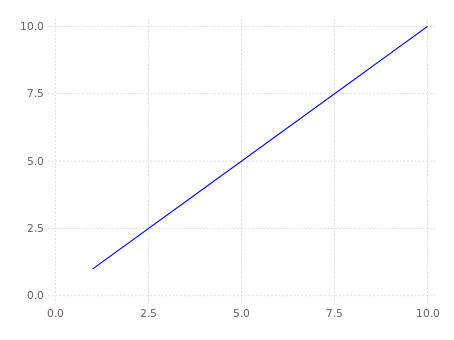

MMAPlot.jl
MMAPlot is a package that wraps around the Gadfly plotting library to make plotting syntax easier.
MMAPlot Demos
Creating and showing a basic plot
# include the MMAPlot.jl package
using MMAPlot
# create a new figure to plot on
new_figure()
# plot a basic line: spcify the points on the x axis, and the points on the y axis
line_plot(1:10, 1:10)
# show the plot
show_figure()

Adding plots, titles, and labels
# add a scatter plot to the figure
scatter_plot(1:10, 10:-1:1)
# add a title, x axis label, and y axis label
set_title("Awesome Plot")
set_xlabel("x")
set_ylabel("y")
# run show_figure again to update the plot
show_figure()
Creating a plot with a legend
# create a new figure to plot on, with a title
new_figure(title="Legendary Plot")
# plot two lines with labels
line_plot(1:0.1:10, sin(1:0.1:10), label="sin")
line_plot(1:0.1:10, cos(1:0.1:10), label="cos")
# display the legend
set_legend(true)
# show the figure
show_figure()